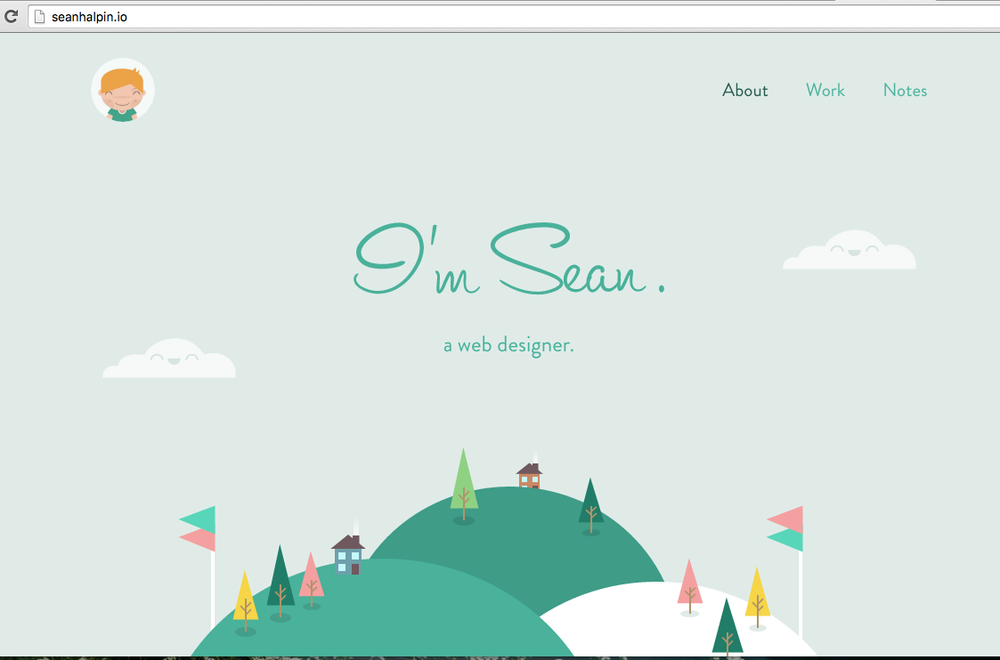
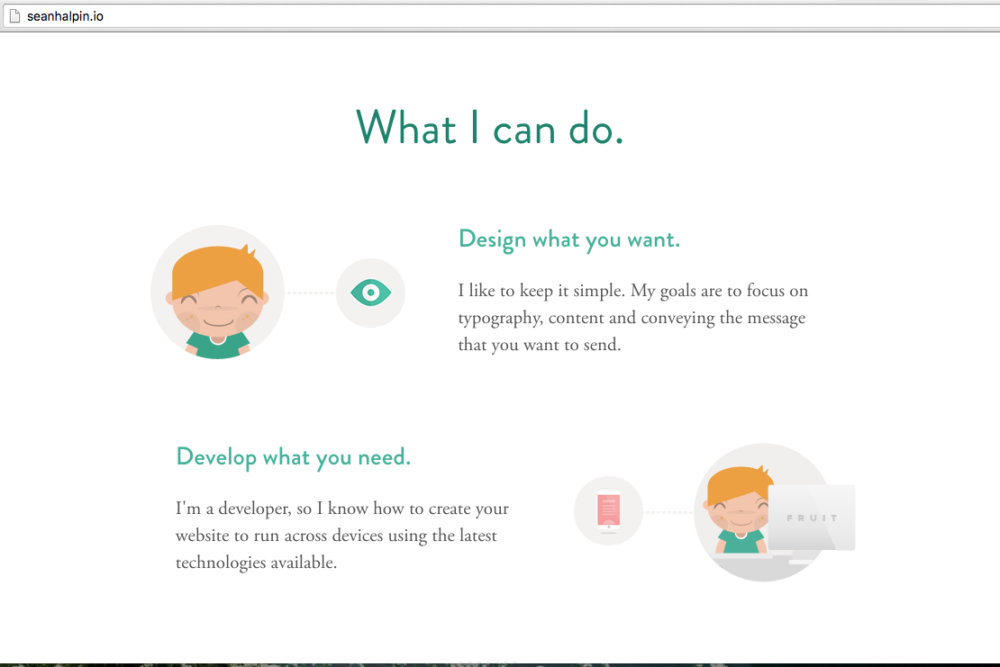
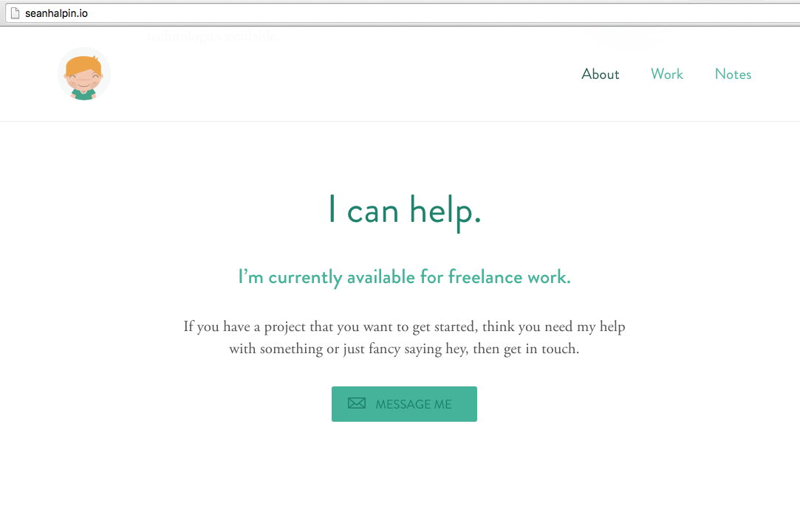

Principles of Design Assignment
seanhalpin.io homepage

- First, this portfolio website is a very good example of having a good Signal-to-Noise Ratio. The design is very simple and there are only three tabs from which to choose from when you first arrive on the page.
- Second, it is a good example of Hick's Law. Hick's Law states that the user should always try to reduce the number of decisions involved. This website has only three decision and you start out on one of them.
seanhalpin.io homepage continued...

- This screenshot is a good example of how to effectively Chunk important information. Sean keeps it clear and concise and chunks together his information for easy and quick reading for the user.
seanhalpin.io homepage continued...

- His use and placement of the "Message Me" button is a good use of the Mapping principle. It has one function and fits in with the layout of the rest of the homepage.
- Along with that, the design of his "Message Me" button is also a good use of the Affordance principle. It has a little mail symbol, a box around the words, "Message Me" and that box is a different color than the rest of the background, while still being designed to go with the theme of the homepage.